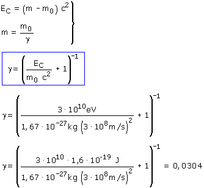
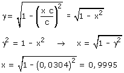
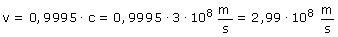

Energía cinética del protón: EC = (m - m0)·c2 Conversión de masas: m = m0/γ Combinando estas dos expresiones resulta un sistema con incógnitas: m, γ  Conociendo γ se puede calcular la velocidad del protón. Este cálculo resultará más fácil si expresamos la velocidad como un porcentaje de la velocidad de la luz: v = x·c  La velocidad del protón tendría que ser un 99.95% de la velocidad de la luz, es decir:  |